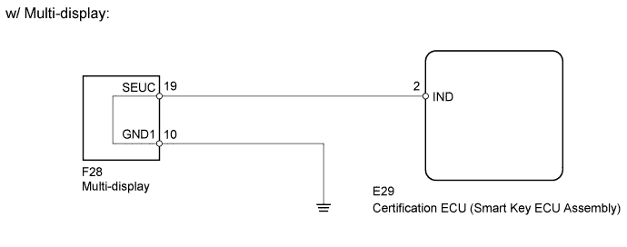
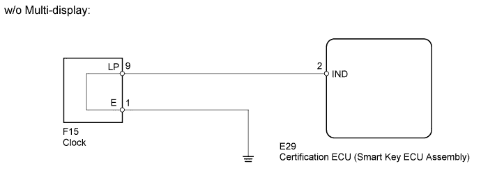
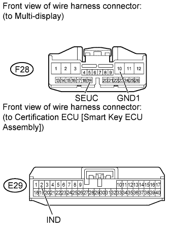
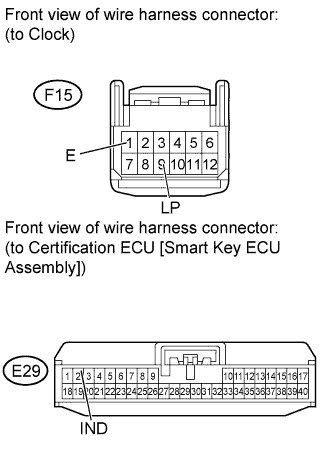

THEFT DETERRENT SYSTEM > Security Indicator Light Circuit |


| 1.PERFORM ACTIVE TEST USING INTELLIGENT TESTER (SECURITY INDICATOR) |
Operate the intelligent tester according to the steps on the display and select "Active Test".
| Tester Display | Test Part | Control Range | Diagnostic Note |
| Security Indicator | Security indicator | ON / OFF | - |
|
| ||||
| OK | ||
| ||
| 2.CHECK VEHICLE EQUIPMENT |
Check if the multi-display is equipped on the vehicle.
| Result | Proceed to |
| w/ Multi-display | A |
| w/o Multi-display | B |
|
| ||||
| A | |
| 3.CHECK HARNESS AND CONNECTOR (MULTI-DISPLAY - CERTIFICATION ECU [SMART KEY ECU ASSEMBLY] AND BODY GROUND) |
 |
Disconnect the F28 display connector.
Disconnect the E29 ECU connector.
Measure the resistance according to the value(s) in the table below.
| Tester Connection | Condition | Specified Condition |
| F28-19 (SEUC) - E29-2 (IND) | Always | Below 1 Ω |
| F28-10 (GND1) - Body ground | Always | Below 1 Ω |
| F28-19 (SEUC) or E29-2 (IND) - Body ground | Always | 10 kΩ or higher |
|
| ||||
| OK | ||
| ||
| 4.CHECK HARNESS AND CONNECTOR (CLOCK - CERTIFICATION ECU [SMART KEY ECU ASSEMBLY] AND BODY GROUND) |
 |
Disconnect the F15 clock connector.
Disconnect the E29 ECU connector.
Measure the resistance according to the value(s) in the table below.
| Tester Connection | Condition | Specified Condition |
| F15-9 (LP) - E29-2 (IND) | Always | Below 1 Ω |
| F15-1 (E) - Body ground | Always | Below 1 Ω |
| F15-9 (LP) or E29-2 (IND) - Body ground | Always | 10 kΩ or higher |
|
| ||||
| OK | ||
| ||